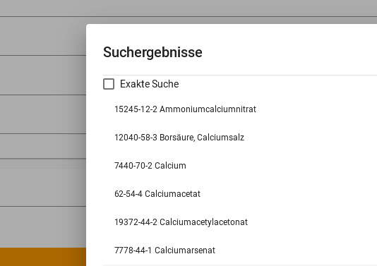
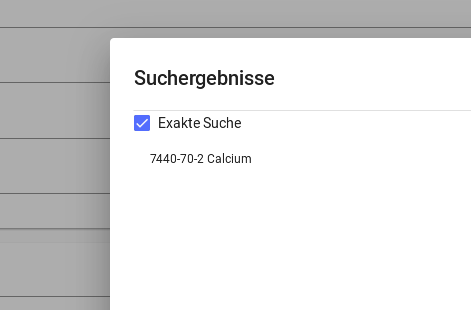

CaBr2 ist ein Open-Source Programm (siehe Lizenz) zur Erstellung von Betriebsanweisungen für Laboreinheiten nach EG Nr. 1272/2008.
Die Daten zum Befüllen der Betriebsanweisung beziehen sich auf mehrere Quellen, die individuell in den Einstellungen ausgewählt werden können:
(Die Quellen werden in den folgenden Versionen erweitert)
CaBr2 ermöglicht es, auf mehreren Weisen nach Stoffdaten für die verwendeten Stoffen zu suchen.
Die Suche kann mit verschiedenen Filtern eingegrenzt oder definiert werden.
Falls beispielsweise explizit nur nach der Summenformel gesucht werden soll,
kann in der Suchen- Spalte statt Stoffname Summenformel ausgewählt werden.
Mit Hilfe des Pluses darunter können zudem weitere Filter ausgewählt werden.
Mehrere Filter können zusammen verwendet werden.
Wichtige Information zur Summenformel !!!
Gestis akzeptiert nur eine bestimmte Summenformel
--> B(OH)3 wird zum Beispiel nur als H3BO3 akzeptiert
--> CH3COOH wird nur als C2H4O2 akzeptiert
Wenn mit einem Filter nach einer Chemikalie gesucht wird, die in vielen Verbindungen vorkommt, kann mit Hilfe der exakten Suche direkt nach der Grundchemikalie gesucht werden.
 
Die ausgewählten Chemikalien werden unter der Suche aufgelistet.
Um diese im Nachhinein bearbeiten zu können, kann mit der Maus die gewünschte Chemikalie ausgewählt und angeklickt werden.
Auf der Betriebsanweisung gibt es die Spalte Für Ansatz benötigt.
Im Fenster, welches sich nach Anklicken der zu bearbeitenden Chemikalie öffnet,
kann diese individuell ausgefüllt werden.
Unter Menü kann die erstellte Betriebsanweisung als pdf-Datei exportiert oder als cb2-Datei gespeichert werden.
cb2-Dateien können in CaBr2 erneut geöffnet und verändert werden.
Genauere Informationen und Erklärungen zu CaBr2 sind auf GitHub oder unter www.cabr2.de zu finden.
Dort sind unter dem Abschnitt Anleitung exakte Erklärungen zu jedem Thema aufgeführt.